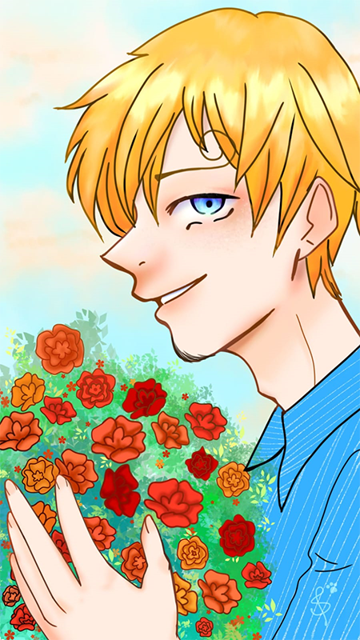
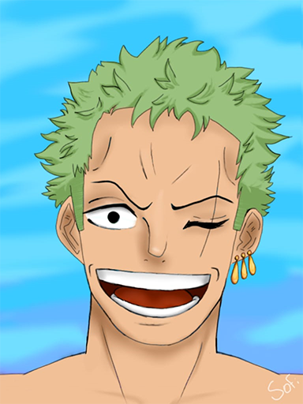
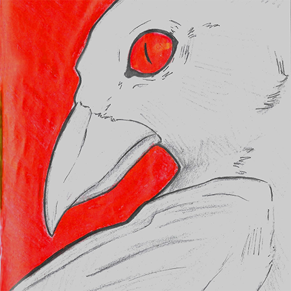

Quem sou eu?
Autora de diversas obras, Sofia Santos Rocha é uma artista guarulhense que desenha desde os seus 10 anos de idade, sonhando em ser uma designer profissional, atualmente está cursando design gráfico.
Obras
Sanji, 20 de Fevereiro de 2019.
Zoro
Zoro, 16 de Março de 2017.
Pássaro, 28 de Abril de 1976.
Redes Sociais: